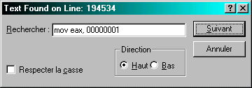
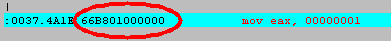

INTRO IMPORTANTE
Dans mes deux tuts joints j'ai utilisé une technique toute bête qui marche avec presque
tous les progs.
La technique se déroule en 3 parties :
1° : trouver la procédure d'identification du sérial.
2° : comprendre quelle valeur elle retourne quand le code est bon
3° : patcher le code pour que cette valeur soit la bonne.
Les tuts sont la pour vous montrer comment faire.
Petit exemple :
Tout d'abord déterminer la bonne valeur de sortie de la procédure d'identification.
Pour cela regardez le test qui est fait apres le call. Si y teste eax regardez
dans le registre combien il vaut. si il vaut 1 la bonne valeur c'est 0 et inversement
(du moins c'est souvent ça)
si eax doit valoir 1 apres la procédure d'identification et beh on va placer dans
cette procédure un truc qui le mets a 1.
Ce qui donne en assembleur :
MOV EAX,00000001
Cependant pour le patcher ça se fait en héxadécimal. (eh ouais)
et pour savoir comment le traduire en hexa c'est simple.
Prenez un prog au pif, désassemblez le (avec w32dasm) et faites :
search->find text et marquez MOV EAX,00000001 :

si y trouve regardez l'hexa sur la gauche comme l'illustre l'image :

ici c'est 66b801000000 mais ça aurait pu être aussi B801.
Je peux pas vous en dire beaucoup car je suis pas une bête en assembleur mais
plusieurs instructions en assembleur valent parfois des trucs différents en hexa.
SOFTICE
Comme vous pourrez vous en rendre compte j'utilise souvent softice.
Vous pourrez le trouver comme tous les autres progs sur :
www.crackstore.com
Si vous êtes newbies n'ayez pas peur de l'utiliser.
voila les trucs les plus importants a savoir :
ctrl+d pour rentrer dedans
F10 pour executer le prog pas a pas (tracer)
F12 revenir du dernier saut
F5 continuer apres un breakpoint
et aussi :
bpx <+instuction> pour placer un breakpoint.
un gars captait pas ce qu'était un breakpoint donc vous êtes pi t'être plusieurs dans
ce cas la. Un breakpoint est une instuction qui arrete un programme lors d'une
condition précise.
Vous pouvez en mettre sur une ligne du prog :
bpx 00425685 ou 00425685 est l'adresse ou on veut que ça s'arrête.
ou un breakpoint sur une api (apparition d'une boite de message par exemple):
bpx messageboxa
Avant tout il faudra ouvrir votre fichier winice.dat avec softice et virer
les ; devant les EXP=!!! si vous voulez faire ces breakpoints.
Les placer, c'est bien beau mais il faut aussi savoir les enlever.
Pour les virer tous faites :
bc *
pour voir la liste des breakpoints placés faites :
bl
puis faites : bc pour enlever un breakpoint spécifique.
ah autre chose :
sous softice faites toujours :
code on pour afficher le code en hexa
data pour voir la mémoire
r pour voire le registre
J'éspère pas vous avoir découragé mais sachez que si vous captez pas j'ai fait
des tuts plus simples. Message aux newbies : PERSEVEREZ !!!! vous y arriverez.
Putain moi qui voulais faire une toute chtite intro, eh beh c'est plus que ce que
je pensais.
Si vous captez rien mailez moi ça me permettra d'arranger mes tuts.
hccc@caramail.com
www.multimania.com/hccc
Trial member de la French Cracking Force.
TiPiaX